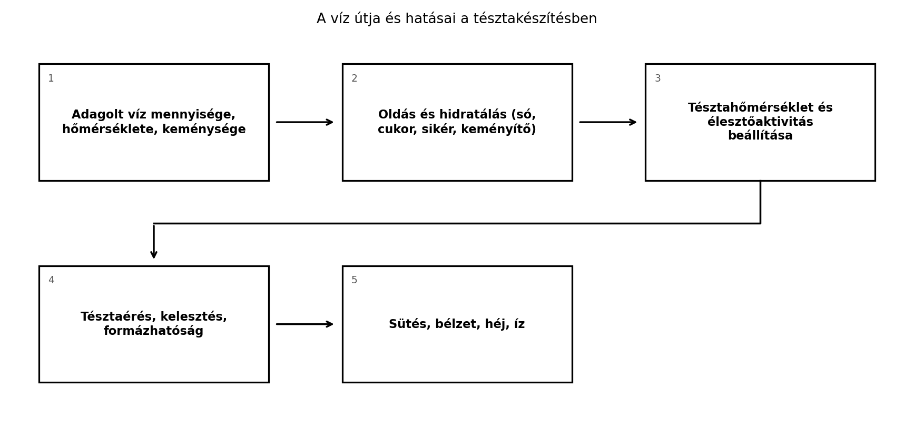

Ha hajnalban a dagasztógéphez 80 kg lisztet mérünk, a víz mennyisége és hőmérséklete legalább annyira meghatározza a kész kenyeret, mint a liszt minősége. A túl meleg víz felpörgeti az élesztőt, a túl hideg lelassítja. A túl kemény víz feszesítheti a tésztát, a nagyon lágy pedig ragadóssá teheti. A víz tehát nem egyszerű „hígító”, hanem a tésztaszerkezet, az erjedés és a gőzölés egyik központi irányítója.

Definíció. A sütőiparban technológiai víznek nevezzük azt az ivóvíz-minőségű vizet, amelyet a tésztához, kovászhoz, sóoldathoz, élesztőoldathoz, gőzfejlesztéshez, valamint az élelmiszerrel érintkező felületek végső öblítéséhez használunk.
Oldás és hidratálás. A víz oldja a sót, a cukrot, az élesztő tápanyagait és a vízben oldódó sütőipari segédanyagokat. A liszt fehérjéi és keményítője csak vízfelvétel után tudnak azzá a rugalmas, nyújtható anyaggá alakulni, amelyből kenyeret és péksüteményt formázhatunk. A víz mennyisége alapvetően meghatározza a tésztakitermelést (TA). Emlékeztetőül: ha 100 kg liszthez 58 kg vizet keverünk, akkor , a víz pedig 58%-os a lisztre vetítve. A gyakorlatban a TA-t termékre, lisztfajtára és gépi feldolgozásra szabják; a konkrét értéket a technológiai lap adja (ellenőrizendő: üzemi technológiai lap).
Sikérképzés. A búzaliszt két fő fehérjéje, a gliadin és a glutenin víz jelenlétében és dagasztás hatására térhálós, rugalmas-nyújtható hálót alkot. Ez a sikérháló tartja meg az erjedéskor keletkező gázbuborékokat, és adja a tészta formázhatóságát, valamint a kész kenyér rugalmas bélzetét. A nem megfelelő vízmennyiség vagy a víz és liszt egyenetlen elkeveredése száraz, foszló, vagy éppen túl lágy tésztát eredményez.
Hőmérséklet-szabályozás. A dagasztóvíz hőmérséklete a legegyszerűbb és leggyorsabb eszköz a tésztahőmérséklet beállítására. A célzott tésztahőmérsékletet a liszt hőmérséklete, a víz hőmérséklete, a helyiség hőmérséklete és a dagasztógép által bevitt súrlódási hő együttesen adja; a pontos számítást a Tésztahőmérséklet és dagasztóvíz számítása alfejezet mutatja be. Itt elég rögzíteni: télen általában melegebb vizet, nyáron hidegebb vizet vagy jégpelyhet adunk a tésztához.
Továbbvitt eredmény. A víz oldó- és hidratáló szerepére, valamint a kialakuló sikérhálóra az A dagasztás célja és a tészta kialakulása alfejezet épít. A víz hőmérsékletének és elérhetőségének hatása pedig az élesztő működésén keresztül a Lazítóanyagok és a sütőélesztő alfejezetben válik kulcskérdéssé.
A pékségben a víz akkor biztonságos, ha ivóvíz-minőségű, tehát mikrobiológiai, kémiai és érzékszervi szempontból is alkalmas emberi fogyasztásra. A víz lehet hálózati ivóvíz vagy engedélyezett saját kút vize, de az utóbbinál rendszeres, laboratóriumi vizsgálat szükséges.
Előírás. Az élelmiszer-higiéniai rendelet alapján az élelmiszer-előállító üzemben az élelmiszerrel érintkező víznek ivóvíz-minőségűnek kell lennie, és a vízellátást úgy kell kialakítani, hogy ne szennyezhesse a terméket. A magyar ivóvíz-minőségi előírás határértékeket tartalmaz például a mikrobiológiai szennyezőkre, nitrátra, arzénra, vasra, mangánra és egyéb anyagokra. A konkrét paramétereket és határértékeket a kiadás előtt ellenőrizni kell az aktuális uniós ivóvíz-irányelv és a magyar ivóvíz rendelet alapján (ellenőrizendő: az emberi fogyasztásra szánt víz minőségi követelményeiről szóló 5/2023. (I. 12.) Korm. rendelet – amely a 201/2001. (X. 25.) Korm. rendeletet váltotta fel – és az (EU) 2020/2184 irányelv; 852/2004/EK rendelet vízellátásra vonatkozó követelményei).
Higiénia. A vízvételi pont környezetét tisztán kell tartani. A tömlőt, csapot, kifolyót nem szabad szennyezett padlóra, mosogatólébe vagy szennyvízcsatornába lógatni. A vízellátás és a szennyvízrendszer nem keveredhet, és a visszafolyást meg kell akadályozni. A pékség saját kútjánál a vízmintavételt a hatósági vagy akkreditált laboratóriumi előírás szerint kell végezni (ellenőrizendő: a pékség vízbiztonsági terve, hatósági útmutató).
HACCP. A hálózati ivóvíz általában előfeltételi programnak (GHP) minősül, nem feltétlenül CCP. A veszélyt a nem megfelelő csatlakozás, a pangó víz, a szűrő vagy lágyító utáni utószennyeződés, illetve a saját kút mikrobiológiai romlása jelentheti. A pékség HACCP-terve rögzíti, hogy ki, milyen gyakorisággal ellenőrzi a víz szagát, színét, hőmérsékletét, a lágyító állapotát és a laboreredményeket (ellenőrizendő: a pékség HACCP-terve).
Definíció. A vízkeménység a vízben oldott kalcium- és magnéziumionok mennyiségére jellemző mérőszám. A gyakorlatban gyakran német keménységi fokban (°dH) adják meg, de használható mmol/l vagy mg/l kalcium-karbonát-egyenérték is (ellenőrizendő: az aktuális vízvizsgálati szabvány szerinti mértékegység). A keménységet elsősorban a kalcium- és magnézium-hidrogénkarbonát, szulfát és klorid okozza.
A vízkeménység hatását a tésztára és az üzemi berendezésekre a következő táblázat foglalja össze. A tartományok tájékoztató jellegűek, és az egyes lisztek, termékek eltérően reagálnak.
| Víz keménysége (°dH, tájékoztató) | Jellemző hatás a tésztára és a termékre | Hatás a gépekre, gőzfejlesztésre |
|---|---|---|
| 0–4, nagyon lágy | Gyengébb, gyakran kissé ragadós tészta; kevés ásványi anyag az élesztőnek | Csekély vízkőképződés |
| 4–8, lágy | Kissé lágyabb, de többnyire jól kezelhető tészta | Csekély–mérsékelt vízkő |
| 8–18, közepes | Általában kedvező, kiegyensúlyozott tészta | Mérsékelt vízkő |
| 18 fölött, kemény | Feszesebb, szárazabb érzetű tészta; lassulhat az élesztő működése; sűrűbb bélzet lehet | Jelentős vízkő a fűtőbetéten, gőzfejlesztőben, mágnesszelepen |
A nagyon lágy víznél a tészta gyakran túl lágy, nehezebben tartja a formáját, mert a kevés oldott ásványi anyag mellett a lisztfehérje-hálózat is másképp alakul. A nagyon kemény víznél a tészta feszesebb lehet, az élesztő aktivitása lassulhat, és a bélzet tömörebbé válhat. A közepesen kemény víz általában jól használható kenyér- és péksütemény-tésztához (ellenőrizendő: üzemi próbasütéssel, termékreceptúránként).
Hiba. Ha a pék a vízkeménységet figyelmen kívül hagyja, a hibát könnyen a lisztre vagy az élesztőre keni. A kemény víz és a gyenge élesztő tünete hasonló lehet: lassú kelés, merev tészta. A helyes eljárás az, hogy a víz keménységét mérik, és a receptúrát vagy a vízelőkészítést ahhoz igazítják.
A vízkő a kemény vízből kiváló kalcium- és magnéziumkarbonát, szulfát vagy egyéb só lerakódása. A kazánban, gőzfejlesztőben, fűtőbetéten, csőrendszerben csökkenti a hőátadást, növeli az energiafelhasználást, és idővel tönkreteheti a berendezést. A tésztához használt víz részleges lágyítása technológiai okból is indokolt lehet, de a teljesen ioncserélt, nagyon lágy víz nem mindig jobb.
Szabály. A vízlágyítót a gyártói utasítás szerint kell üzemeltetni, regenerálni és karbantartani. A regeneráláshoz használt só (általában tablettázott nátrium-klorid) nem élelmiszeripari adalék; a sótartályt zárva, élelmiszertől elkülönítve kell tárolni. A regenerálás alatt és a berendezés öblítésekor a lágyított víz nem kerülhet a tésztába, hacsak a technológia ezt kifejezetten nem engedi.
Gépbiztonság. A vízlágyító berendezés, szivattyú és elektromos szelep tisztítását, sófeltöltést és beavatkozást csak leállított, feszültségmentesített, újraindítás ellen biztosított gépen végezzük. A sós víz és a tisztítószer szembe, bőrre ne kerüljön; a gyártó biztonsági adatlapja szerinti védőkesztyű és védőszemüveg használata szükséges.
A gyakorlatban a kemény vizet gyakran lágyított vízzel keverik, hogy közepes keménységet érjenek el. A teljes lágyítás a kalciumot és a magnéziumot nátriumra cseréli; a nátriumtöbblet a recept sójából származó nátriumhoz képest csekély (tanulási nagyságrend: 22 °dH-s vízből 100 kg lisztre 60 l vízzel kb. 11 g Na, míg a 2% só kb. 790 g Na – ellenőrizendő: vízanalízis), ezért az íz- vagy sómérleg-hatása elhanyagolható. A tésztavizet a tésztaszerkezet (Ca/Mg), a próbasütés eredménye és a vízkő miatt inkább részlegesen lágyítják, a gőzfejlesztő vizét pedig attól függően, hogy a gyártó milyen vizet ír elő (ellenőrizendő: gyártói adatlap, üzemi technológiai előírás).
Nyáron a hálózati víz gyakran 20–24 °C-os, a liszt és a műhely is meleg. Ilyenkor a kívánt 24–28 °C-os tésztahőmérsékletet hideg vízzel vagy jéggel lehet tartani. A jég olvadása sok hőt von el, ezért kis mennyiségű jég is jelentősen hűt.
Összefüggés. A jéggel való hűtés energiaegyensúlya:
ahol a szükséges jég tömege (kg), a dagasztóvíz teljes tömege (a jéggel együtt, kg), a víz fajlagos hőkapacitása, a jég olvadáshője, a hálózati víz hőmérséklete, a célhőmérséklet (°C). A jég a dagasztóvíz része: a vízmennyiséget nem növeli, a receptúra szerinti vízből egy rész jég, a többi hűtetlen víz. A képlet feltételezi, hogy a jég 0 °C-os, hőveszteség nincs, és a keletkező olvadékvíz is felmelegszik a célhőmérsékletre.
Példa (jéghűtés). A receptúra szerint 100 kg dagasztóvíz kell, a hálózati víz 22 °C-os, a keveréknek 16 °C-osnak kell lennie. Mennyi ebből a 0 °C-os jég?
Adott:
,
,
,
,
.
Keresett:
.
Behelyettesítés:
Tehát 5,90 kg jég és 94,1 kg 22 °C-os víz kell; együtt 100,0 kg, azaz a receptúra szerinti vízmennyiség. Ellenőrzés: a nevező nagyobb, mint az olvadáshő, mert az olvadékvizet is fel kell melegíteni. Az 5,9 kg jég a 100 kg víznek körülbelül 6%-a, ami reális. Ha egy már kimért vízmennyiséget hűtenénk jéggel, a többletvizet a receptúrából le kell vonni. A gyakorlatban a keverés után hőmérővel ellenőrizni kell a keveréket, mert a hőveszteség és a jég tényleges hőmérséklete módosíthatja az eredményt.
Példa (kemény víz hígítása). Van 500 liter 22 °dH keménységű vizünk, és 0 °dH-ra lágyított vizet tudunk hozzákeverni. Cél 12 °dH. Mennyi lágyított vizet kell adni?
Jelöljük -szal a lágyított víz térfogatát. A kevert keménység:
Átrendezve:
Behelyettesítve:
Ellenőrzés: a kevert térfogat ; a keménység , tehát az eredmény helyes. A gyakorlatban a lágyított víz keménysége általában nem pontosan 0 °dH, ezért a berendezés után érdemes mérni.
Egy kis pékségben nyáron a megszokott receptúrával dolgoztak, de a kenyerek sorra laposak, túlkeltnek tűntek, a héjuk pedig halvány volt. A pék a lisztre és az élesztőre gyanakodott, de a valódi ok a dagasztóvíz hőmérséklete volt: a hidegvízcső a napon felmelegedett, és a tésztába 24 °C helyett 29 °C-os víz került. A túl meleg tészta felgyorsította az erjedést, a tészta a kelesztőben „elfutott”, a formázott veknik pedig elveszítették a tartásukat. A megoldás az lett, hogy jégpehely-adagolót vagy előhűtött vizet használtak, és minden dagasztásnál megmérték a víz hőmérsékletét. A dokumentált mérés utólag is segített megkülönböztetni a vízhibát a liszt- vagy élesztőhibától.
A vizet a pékségben elsősorban érzékszervileg és hőmérsékletre vizsgáljuk. A víz legyen tiszta, szagtalan, idegen íztől mentes. A technológiai víz hőmérsékletét minden dagasztás előtt ellenőrizzük, mert ez a tésztahőmérséklet-számítás alapja. A keménységet egyszerű gyorsteszttel vagy laboratóriumi méréssel lehet követni; a vízlágyító után mért keménységnek a beállított tartományban kell lennie. A sótartály szintjét, a regeneráló só állapotát és az esetleges csomósodást naponta ellenőrizni kell. A mikrobiológiai vízvizsgálat gyakoriságát és a mérendő paramétereket az üzemi HACCP-terv vagy a hatósági előírás adja (ellenőrizendő: üzemi HACCP-terv, vízvizsgálati előírás).
Nem ivóvíz-minőségű víz használata technológiai célra. A locsolóvíz, a gépészeti hűtővíz vagy a szennyezett tömlőből vett víz mikrobiológiai és vegyi szennyezést vihet a termékbe. Ez a leggyakoribb, ugyanakkor legegyszerűbben elkerülhető hiba. Mindig a jelölt, ivóvíz-minőségű csapról vételezzünk, és ne lógassuk a tömlőt szennyezett felületre.
A víz hőmérsékletének elhanyagolása. Télen a túl hideg víz miatt a tészta lassan kel, nyáron a túl meleg víz miatt túlkel. A tünet hasonlít a rossz élesztőre, ezért a hibás következtetés gyakori. A megoldás a vízhőmérséklet mérése és a tésztahőmérséklet számítása.
A teljesen lágyított víz automatikus használata. A nagyon lágy víz gyenge tésztát, nehéz formázhatóságot okozhat, és a vízkeménység hiánya a tésztaszerkezetet is érinti. A tésztavizet keveréssel állítsuk be a kívánt közepes keménységre, ne mindig a leglágyabb vizet használjuk (ellenőrizendő: üzemi próbasütés).
A vízlágyító karbantartásának elhanyagolása. Ha a sótartály kiürül, a berendezés nem lágyít, és a kemény víz vízkövet rak le a gőzfejlesztőben. Ez energiaveszteséget és meghibásodást okoz. A sószintet és a lágyított víz keménységét rendszeresen ellenőrizni kell.
1. feladat (A). Sorold fel a víz három fő technológiai szerepét, és írj mindegyikhez egy-egy pékségi következményt, ha nem teljesül.
2. feladat (A). Számítsd ki, mennyi vizet kell adni 100 kg liszthez, ha a tésztakitermelés TA = 162. Add meg a víz lisztre vetített százalékát is.
3. feladat (B). 100 kg 20 °C-os vizet 26 °C-ra szeretnénk melegíteni 80 °C-os meleg víz hozzáadásával. Mennyi meleg vizet kell hozzákeverni? Tételezd fel, hogy nincs hőveszteség, és a fajlagos hőkapacitások azonosak.
4. feladat (B). Keverj össze 300 liter 18 °dH keménységű vizet 200 liter 6 °dH keménységű vízzel. Mennyi lesz a keverék keménysége?
5. feladat (C). Egy üzemben a kenyértészta nyújtáskor feszes, a kelés lassú, és a gőzfejlesztő fűtőbetétjén vastag fehér lerakódás látható. Mi lehet az ok? Milyen vizsgálattal erősítenéd meg, és milyen vízelőkészítést javasolnál?
6. feladat (D). Egy technológiai lap szerint a dagasztóvíznek 16 °C-osnak kell lennie. A hálózati víz 24 °C, és 60 liter vizet használunk fel. Számítsd ki a szükséges jég mennyiségét, majd írd le, milyen lépésekkel ellenőriznéd a gyakorlatban, hogy a hideg víz és jég keveréke valóban elérte-e a célt.
Önellenőrzés – válaszok
Feladatok megoldásai
1. feladat. Három szerep: oldás/hidratálás, sikérképzés, hőmérséklet-szabályozás. Ha az oldás nem megfelelő, a só vagy cukor egyenetlenül oszlik el; ha a hidratálás hiányos, a tészta száraz, foszló. Ha a sikérháló nem alakul ki, a kenyér nem tartja meg a gázt, lapos lesz. Ha a hőmérséklet rossz, az erjedés túl gyors vagy túl lassú.
2. feladat. TA = 162 azt jelenti, hogy 100 kg
lisztre 162 kg liszt + víz keverék jut. A víz tömege:
.
A víz lisztre vetítve 62%.
3. feladat. Legyen a hozzákevert meleg víz tömege
.
A keverék hőmérséklete:
.
Szorzás után:
,
azaz
,
így
,
.
Tehát körülbelül 11,1 kg 80 °C-os vizet kell adni. Ellenőrzés:
.
A gyakorlatban a hőveszteség miatt kissé több meleg víz kellhet.
4. feladat. .
5. feladat. Az ok a kemény víz. A fehér lerakódás vízkő, a tészta feszes és a kelés lassú. Megerősíteni keménységméréssel lehet (gyorsteszt vagy labor). Javaslat: részleges vízlágyítás, azaz a kemény vizet lágyított vízzel keverjük közepes keménységre, és ezt próbasütéssel igazoljuk.
6. feladat. A szükséges jég:
jég és 55,4 kg 24 °C-os víz (együtt 60,0 kg; a jég a dagasztóvíz része,
a vízmennyiséget nem növeli).
Gyakorlati ellenőrzés: mérjük meg a víz hőmérsékletét a jég hozzáadása
előtt; adjuk hozzá a számított jég mennyiséget; keverjük addig, amíg a
jég elolvad; mérjük újra hőmérővel; ha még magasabb, kis adagokban
adjunk hozzá jeget; ha alacsonyabb, keverjünk hozzá tartalék, melegebb
vizet; a végleges értéket írjuk a dagasztási naplóba.
A víz a sütőiparban nem egyszerű hígító, hanem három fő szerepben irányítja a tésztát: oldja az összetevőket, hidratálja a lisztfehérjéket és keményítőt, és hőmérsékletével szabályozza az erjedést. A búzaliszt gliadin- és gluteninfehérjéi csak víz jelenlétében, dagasztással alakítanak ki rugalmas sikérhálót. A víz legyen ivóvíz-minőségű, mikrobiológiailag biztonságos és a technológiához beállított hőmérsékletű. A vízkeménység a kalcium- és magnéziumionok tartalmát jelzi; a nagyon lágy víz gyenge tésztát, a nagyon kemény víz feszes tésztát, lassú kelést és vízkövet okozhat. A vízlágyító berendezést gyártói utasítás szerint, élelmiszerbiztonsági és munkavédelmi szabályok mellett kell üzemeltetni. A jég olvadáshőjével kis tömegű jég is hatékonyan hűt, ezért nyáron a tésztahőmérséklet beállításának fontos eszköze. Továbbvitt eredmény. A víz hidratáló és sikérképző szerepét az A dagasztás célja és a tészta kialakulása alfejezet használja, a víz hőmérsékletének élesztőre gyakorolt hatását pedig a Lazítóanyagok és a sütőélesztő alfejezet értelmezi.
A kiadás előtt ellenőrizendők: a 852/2004/EK rendelet élelmiszer-higiéniai követelményeinek vízellátásra vonatkozó aktuális szakaszai; az ivóvíz-minőségre vonatkozó hatályos uniós irányelv és magyar jogszabály (5/2023. (I. 12.) Korm. rendelet, amely a 201/2001. (X. 25.) Korm. rendeletet váltotta fel, és az (EU) 2020/2184 irányelv) konkrét paraméter- és határértékei; a vízkeménység mértékegységeire és osztályozására vonatkozó aktuális szabvány; a vízlágyító berendezés gyártói adatlapjai és a pékség HACCP-tervében rögzített vízvizsgálati gyakoriság. A táblázatban közölt keménységi tartományok és sütőipari hatások tájékoztató tanulási példák, nem hatósági határértékek.